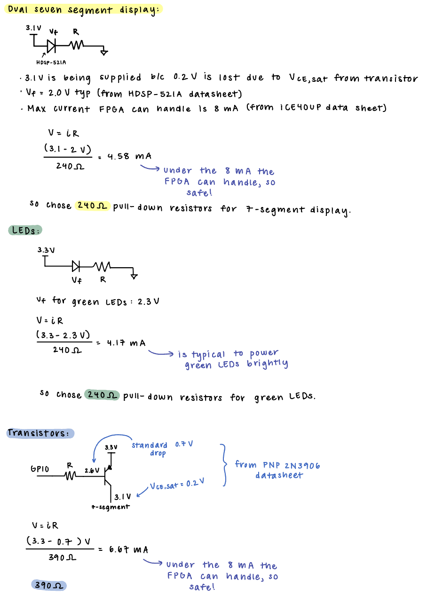
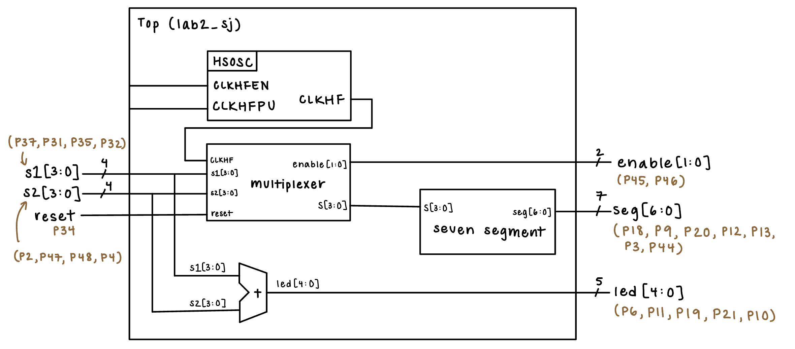
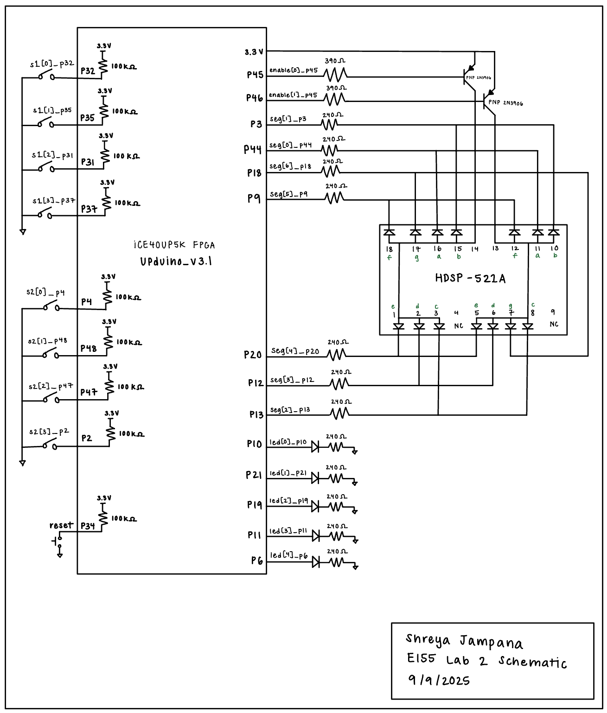
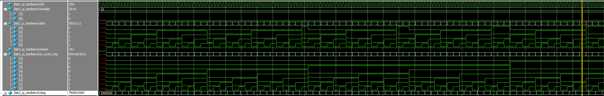
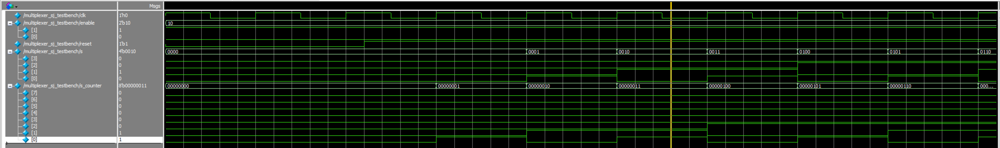

FPGA Time-Multiplexed Seven-Segment Display
Introduction
In this lab, time multiplexing was used to efficiently drive two seven-segment displays with a single set of FPGA I/O pins. The sum of both numbers were displayed on five separate LEDs. Additionally, transistors were used to drive large currents from the FPGA pins.
Design and Testing
The design of the time multiplexing scheme was one of the main components of this lab. Time multiplexing is a technique that is used to share a common expensive hardware resource for several purposes at different times. In this lab, time multiplexing was used to drive a single seven-segment decoder module to run both halves of a dual display.
In terms of wiring, this is done by connecting a single GPIO pin on the FPGA to the same segment (e.g. segment e) on both the seven-segment displays. However, in order to control which half of the dual display is active, the common anode of only one display at a time is turned ON. The power to these two displays are controlled by two separate GPIO pins, which are toggled at a certain speed in order for two distinct numbers to appear simultaneously on each display. Due to the anode requiring more current than the FPGA output pin can drive, a 2N3906 PNP transistor was used to limit the base current and not draw too much from the FPGA pin. Both of the dual displays are controlled by four bit DIP switches, and the sum of both numbers is displayed as a five bit number on five separate LEDs. The hardware layout, with the breadboard and wiring as described above, is shown in Figure 1.

The wiring and breadboard layout was intuitively done to enable easy debugging and be visually appealing. In order to justify resistor choices, calcuations were done, as shown in Figure 2, to ensure proper brightness of the five individual LEDs and that the current draw/sink on all the FPGA pins was below the currents specified in the recommended operating conditions.

From a software standpoint, important decisions were made in order to split up the required tasks of the lab into respective modules. A top level module was used to instantiate the on-board high-speed oscillator (HSOSC) from the iCE40 UltraPlus primitive library, which was the 48 MHz clock that was divided and used throughout the system. The top level module also contained the combinational logic for the five individual LEDs, as they were simple and therefore did not require a separate module.
One of the most important design considerations was the speed at which the two displays were toggled. This was done using a clock divider and 32-bit counter, where choosing different bits of the counter in the clock division allowed for different switching speeds. After testing, it was determined that the 18th bit of the counter produced a toggling speed that ensured that both hexadecimal digits lit up simultaneously without visible oscillation and without the digits bleeding into each other. At this speed, the clock divider enabled power to each of the displays in the dual display and the four bit inputs were sent one at a time to the seven segment module.
In order to verify the software, three testbenches were written with one for each module——top level, seven-segment, and multiplexer. The seven-segment testbench checked that the correct segments displayed with the corresponding four bit inpupts. The top level testbench checked that the combinational logic for the five LEDs functioned as properly. The multiplexer module checked that the input to the seven segment display was the correct four bit input corresponding to which display was enabled. The testbenches also checked the toggling of the enable signals. The waveforms are shown in the Results and Discussion section. In order to test the hardware, all switches and their summing combinational logic was tested on the breadboard. A picture from one of these tests is shown below in Figure 3.

Technical Documentation
The source code for the project can be found in the associated Github repository.
Block Diagram

The block diagram shown in Figure 4 demonstrates the overall architecture of the design. The top-level module includes three submodules: the high-speed oscillator block (HSOSC), the seven-segment module to operate the 7-segment display, and the multiplexer module to operate the correct switching/toggling of the dual displays.
Schematic

The physical layout of the design is shown in Figure 5. The left side of the UPduino shows the inputs, which are the reset and two sets of four-input DIP switches with an internal 100 kΩ pullup resistor to ensure the active low reset pin was not floating. The right side shows the outputs, which are the GPIO pins connecting the transistors to power, the two enables, the seven segments, and the five LEDs. All of the LEDs and transistors are connected to current-limiting resistors, the calculations for which are shown above in Figure 2.
Results and Discussion
Testbench Simulation
Three testbenches were written in SystemVerilog, one for each of the modules (top level, multiplexer, and seven-segment), in order to show that the combinational logic works and that the enables toggle and produce the correct, corresponding display.
As shown in the simulation images below, all the simulations passed and produced the expected outputs. Figures 6 and 7 show the simulation waveforms for the top level module. Figure 6 shows that the led variable is the correct sum of the 8-bit counter input. Figure 7 shows that when zoomed out, the enable toggles and tests the other cases. Figure 8 shows that s (input to the seven-segment module) gets the correct four bit input during the correct enable. In the waveforms, it is visible that the value of four bits of s_counter (the input) match the value of s one clock cycle later. This makes sense because s is an output of the multiplexer module, and thus displays its value one clock cycle later. Similar to the top level, zooming out shows that the enable switches as expected to test all the other cases. Figure 10 shows the seven-segment waveforms also producing the expected outputs for the segment values on the display.





Therefore, the design met all of the intended design objectives, and performed quickly and reliably. The simulations shown below ran in a few seconds, and the hardware displayed all the required LEDs brightly.
Conclusion
My FPGA designs successfully controlled a time multiplexing scheme to drive two 7-segment displays with a single set of FPGA I/O pins. A transistor to drive large currents from the FPGA pins was also successfully implemented. Additionally, I gained a lot of experience with building testbenches and modular Verilog systems.